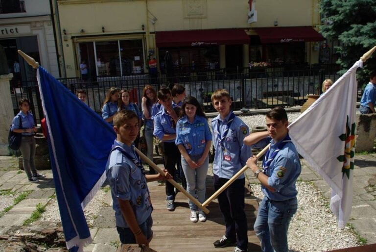

📢 Anunț • 2014
Deschiderea anului cercetășesc 2014-2015

Deschidem oficial primul an cercetasesc din istoria Grupului Cabana Scout! Va asteptam alaturi de noi!
CAND?Sambata 24 august 2014, orele 11:00 – 16:00UNDE?– ROABA DE CULTURA – parcul Herastrau, Bucuresti